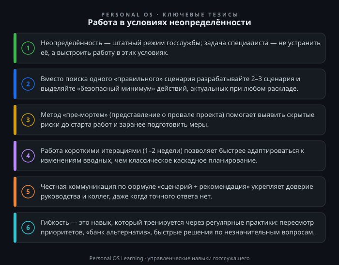

Неопределённость — не временное отклонение от нормы, а штатный режим работы современной государственной службы. Изменение федерального законодательства, корректировка бюджетных лимитов, внезапные поручения вышестоящих органов, смена приоритетов в середине финансового года — всё это не исключения, а повседневная реальность. Неопределённость задач — не редкий эпизод, а регулярная часть рабочей недели. При этом большинство должностных регламентов описывают стабильные процессы, но не учат действовать, когда вводные меняются на ходу.
В этой статье мы разберём, что такое неопределённость с точки зрения управленческой компетенции «Гибкость и готовность к изменениям», почему она вызывает стресс и паралич решений, и — главное — какие конкретные инструменты помогут вам сохранять продуктивность, качество и здравый смысл в ситуациях, когда нет готовых ответов.
В классическом менеджменте под неопределённостью понимают ситуацию, когда информации недостаточно для однозначного выбора способа действий. Есть три уровня неопределённости:
На государственной гражданской службе все три уровня присутствуют одновременно. Например, при подготовке региональной программы социально-экономического развития вы можете не знать точных объёмов федерального софинансирования (контекстная и операционная неопределённость), а также не иметь утверждённой методики расчёта показателей (стратегическая). В таких условиях традиционный подход «сначала утвердим план, потом будем работать» даёт сбой. План устаревает быстрее, чем его согласуют.
Нормативная база также не стоит на месте. Федеральный закон от 27.07.2004 № 79-ФЗ «О государственной гражданской службе Российской Федерации» Федеральный закон от 27.07.2004 № 79-ФЗ «О государственной гражданской службе Российской Федерации» предъявляет требования к квалификации и исполнению обязанностей, но не содержит алгоритмов для работы в неопределённых ситуациях. Поэтому гибкость становится не дополнительным качеством, а необходимым профессиональным навыком, который нужно развивать системно.
Прежде чем говорить об инструментах, важно понять, почему неопределённость так выбивает из колеи. С точки зрения когнитивной психологии, наш мозг эволюционно настроен на поиск стабильности. Неизвестность воспринимается как угроза, и запускается стрессовая реакция: повышается тревожность, сужается фокус внимания, усиливается склонность к «туннельному мышлению».
Для госслужащего это особенно критично, потому что профессиональная среда исторически строилась на принципах регламентации и предсказуемости. Мы привыкли, что «всё должно быть по инструкции». Когда инструкция отсутствует или устарела, возникает когнитивный диссонанс: «Я не знаю, как правильно, значит, я боюсь ошибиться, значит, лучше ничего не делать». Отсюда — прокрастинация, перекладывание решений на вышестоящих, бесконечные уточняющие запросы.
Важно понимать: неопределённость не равна хаосу. Это лишь отсутствие готовых решений, но не отсутствие правил. Есть процедуры, есть рамки полномочий, есть коллеги и эксперты. Задача гибкого специалиста — не ждать полной ясности, а действовать в имеющихся рамках, постепенно проясняя ситуацию.
Практический вывод: если вы чувствуете тревогу при получении размытой задачи, это нормальная физиологическая реакция, а не сигнал о вашей некомпетентности. Признайте это и переведите фокус с эмоций на действия — следующий раздел о том, как именно это сделать.
Когда нет единого прогноза, не пытайтесь угадать один «правильный» вариант. Вместо этого разработайте 2–3 сценария развития событий. Это стандартный инструмент стратегического менеджмента, адаптированный для оперативной работы.
Как применять на госслужбе:
Такой подход даёт двойной эффект: вы перестаёте быть заложником ситуации и одновременно создаёте себе «подушку безопасности». Например, при подготовке проекта нормативного акта вы можете подготовить базовую версию и две альтернативные редакции ключевых норм. Когда придут уточнения, вы не начнёте с нуля, а лишь выберете нужный вариант.
Важно: сценарное планирование не означает, что вы обязаны предусмотреть всё. Достаточно трёх вариантов, иначе вы потратите больше времени на планирование, чем на исполнение.
Метод «пре-мортем» (от лат. pre — до, mortem — смерть) пришёл из психологии и используется для выявления скрытых рисков. Суть проста: представьте, что ваш проект или поручение уже провалилось через полгода. Опишите, по каким причинам это произошло. Это упражнение позволяет вытащить на поверхность те риски, которые вы обычно игнорируете из-за оптимизма или страха показаться пессимистом.
Пошаговый алгоритм:
Этот метод особенно ценен на госслужбе, где цена ошибки высока, а сроки на исправление часто отсутствуют. «Пре-мортем» занимает 20–30 минут, но может сэкономить месяцы согласований. Он же развивает гибкость мышления, потому что приучает рассматривать не один «правильный» путь, а целое поле возможностей и угроз.
В классическом управлении мы привыкли к каскадной модели: «сначала планируем полностью, потом делаем». В неопределённой среде эта модель неэффективна. Вместо неё используйте принцип коротких итераций:
Для госслужащего это означает: не ждите утверждения всех методических рекомендаций, чтобы начать собирать данные. Начните с пилотного сбора по имеющейся форме. Не ждите финальных бюджетных лимитов — подготовьте проект сметы с двумя вариантами распределения. Не ждите окончательного текста поручения — начните с анализа текущего состояния вопроса.
Этот подход хорошо согласуется с логикой внутреннего финансового аудита: там тоже важна регулярность — оценка рисков и корректировка процессов по её результатам, а не разовая проверка. Но даже если внутренний финансовый аудит в вашем органе устроен иначе, логика коротких циклов работает всегда.
Гибкость — это не только внутренняя готовность менять планы, но и умение честно и конструктивно коммуницировать о неопределённости с руководством, коллегами и внешними партнёрами. Частая ошибка — имитировать определённость: «сделаем в срок», «проблем не будет». Когда сроки срываются, это подрывает доверие.
Правильная формула — «сценарий + рекомендация»:
Такая коммуникация показывает руководству, что вы контролируете ситуацию, даже если контролируете её не полностью. Вы не перекладываете проблему, а предлагаете варианты и берёте на себя ответственность за выбор. Это и есть зрелая гибкость.
Помните: на государственной службе любые решения оформляются документально. Поэтому в условиях неопределённости фиксируйте свои сценарные расчёты, альтернативные варианты и обоснования в служебных записках. Это защитит вас при последующем контроле и одновременно станет элементом управления рисками.
Иногда неопределённость переходит в быстрое и хаотичное изменение вводных. Классический пример — поручение, которое трижды меняло формулировку за один день. В таких случаях важно не потерять фокус и не «раствориться» в суете. Используйте алгоритм перенастройки из четырёх шагов:
Этот алгоритм занимает 10–15 минут, но предотвращает часы хаотичной переделки. Он дисциплинирует и вас, и окружающих, создавая ощущение управляемости даже в турбулентности.
Гибкость — это компетенция, которую можно натренировать. Помимо конкретных инструментов, внедрите в свою работу несколько устойчивых привычек:
Привычка 1. Еженедельная «переоценка приоритетов». Каждую пятницу тратьте 15 минут на пересмотр своих задач с вопросом: «Что изменилось за неделю? Какие задачи потеряли актуальность? Какие появились?» Это поможет не тащить в следующую неделю устаревшие пункты.
Привычка 2. Ведение «банка альтернатив». Для каждой значимой задачи держите в голове или в заметках 2–3 альтернативных способа достижения цели. Не обязательно реализовывать их, но само наличие альтернатив снижает тревожность и увеличивает скорость реакции.
Привычка 3. Практика «быстрых решений». Намеренно тренируйтесь принимать решения с неполной информацией на незначительных вопросах. Например, выбирать формат отчёта или порядок проведения совещания без долгих согласований. Это развивает «мышцу решительности».
Привычка 4. Обучение у смежных отделов. Неопределённость часто связана с тем, что мы не знаем контекста других подразделений. Регулярно общайтесь с коллегами из финансового, юридического, организационного отделов. Это даёт вам больше точек опоры при неясной ситуации.
Для закрепления материала выполните следующие упражнения. Каждое займёт 15–30 минут, но даст немедленный эффект для вашей текущей работы.
Задание 1. Сценарная развилка для актуальной задачи. Возьмите любую текущую задачу, по которой есть неопределённость (не утверждён бюджет, не принят закон, не определены сроки). Постройте три сценария: базовый, оптимистичный, пессимистичный. Для каждого сценария выпишите 3–4 конкретных действия, которые вы предпримете. Определите «безопасный минимум» — действия, актуальные во всех сценариях. Начните выполнять их уже на этой неделе.
Задание 2. Пре-мортем для планового отчёта. Возьмите ближайший крупный отчёт или проект, который должен быть сдан в течение 1–3 месяцев. Представьте, что он отклонён контролирующим органом. Запишите 7 причин, почему это произошло. Выберите три наиболее вероятные причины и для каждой придумайте одну превентивную меру. Внесите эти меры в свой рабочий план.
Задание 3. Тренировка коммуникации. Вспомните недавнюю ситуацию, когда руководство задало вам вопрос, на который у вас не было точного ответа. Переформулируйте свой ответ по формуле «сценарий + рекомендация». Запишите новый вариант ответа. Проанализируйте, чем он отличается от вашего первоначального ответа, и что изменилось бы в восприятии, если бы вы так ответили тогда.
Неопределённость на государственной службе — не временное неудобство, а профессиональная среда. От госслужащего требуется не «знать ответы на все вопросы», а уметь сохранять работоспособность и принимать качественные решения в условиях, когда ответов пока нет. Это достигается не героизмом, а системным применением инструментов: сценарного планирования, метода «пре-мортем», коротких итераций и честной коммуникации по формуле «сценарий + рекомендация».
Гибкость — это не хаотичная реакция на каждое изменение, а дисциплинированный процесс работы с несколькими вариантами будущего. Освоив этот процесс, вы перестанете бояться перемен и начнёте использовать их как ресурс для профессионального роста и повышения качества решений.

Открыть инфографику в полном размере ↗